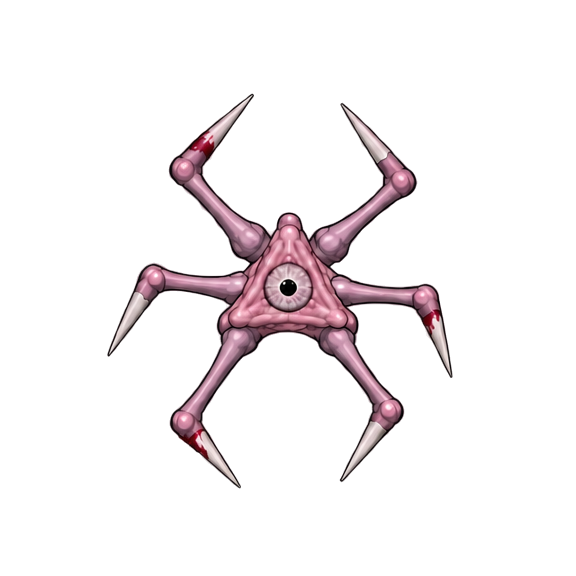
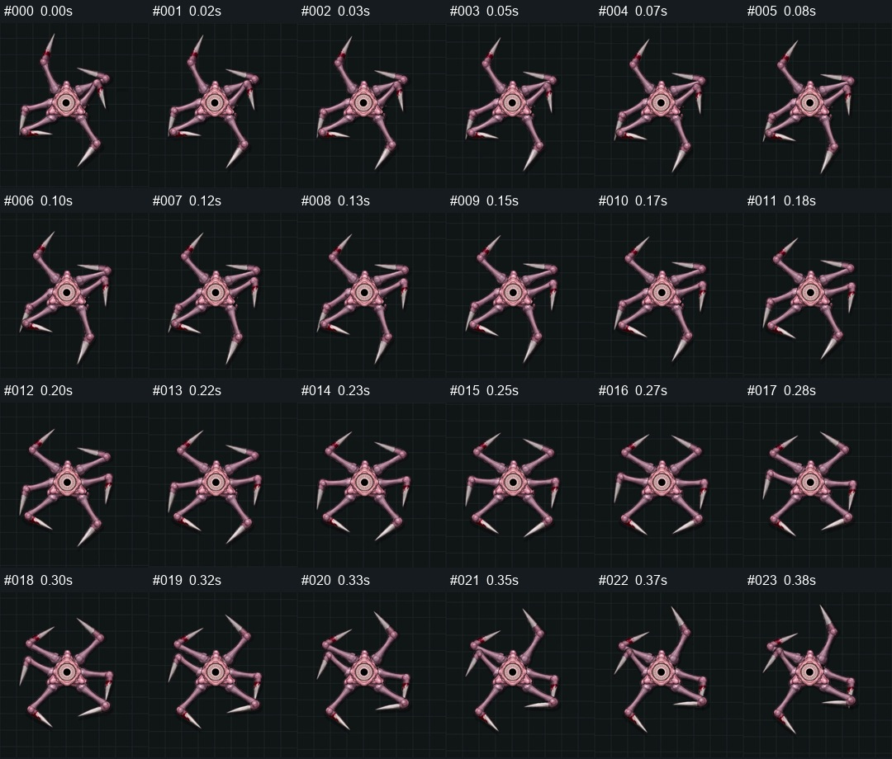

Одна условная шестилапая постановка. Два разных пути получить цельный кадр. Старый рисунок — отдельный контроль качества.
Это схемы, не готовая анимация Сталкера. Для D не нарисованы новые цельные кадры; для C не создана 3D-модель с настоящей кожей. Линии и розовые полосы показывают принцип работы. Они не подтверждают сохранность объёмов, силуэта, фактуры или художественную приёмку.
D · 3D-ориентир → цельный рисунок
Рекомендуемый первый эксперимент
Манекен задаёт опоры, высоты и фазу. Художник заново рисует всё тело в кадре, сохраняя характер исходника. Старая кожа не растягивается.
Здесь виден только ориентир. Ни одного нового рисованного кадра нет.
C · цельная 3D-кожа → PNG
Запасной производственный путь
Один объём с корректирующими формами суставов. Кадры рендерятся строго сверху в RGBA. Текстура прикреплена к поверхности.
Полосы — схема поверхности, а не реальная topology/weights/mesh. Blender не вызывался.
Контроль · старый цельный Sprite

Точный целый Walk00 из сохранённого prefab, перенесённый на холст 576² по родному pivot. Его пиксели не деформируются и не изображают выбранное действие схемы.
Эталон цельности и индивидуальности рисунка, не доказательство правильной анатомии всех исходных кадров. Статичный оригинал не синхронизирован с условным манекеном.
Общий масштаб двух схем: 576 px на 2.8 условной единицы. Шаг: 0.60 единицы за цикл, доля опоры 0.60. Каждое действие длится 1 условную секунду при 1×; это не тайминги AI. На раскрытии можно оценить возможность отдельного сна/пробуждения Спящего, но художественная переносимость на него пока не проверена.
Получится другой CGI-вид; веса могут сплющить суставы
В игре после запекания
Выбор цельного Sprite по фазе/состоянию; IK и skin deformation остаются offline
Исторический кейс Locomotion02 · реальное сохранённое изображение
after-00.jpg, редакция, описанная в README как bde2908. Это исторический управляемый URP-захват, скопированный без изменения файла. Его шаг был правдоподобнее, но перенос нарисованной кожи и складывание остаются отдельными проблемами. Текущая игра не использует этот runtime-риг.

У него другой захват/масштаб, поэтому он не включён в синхронный числовой тест двух кандидатов.